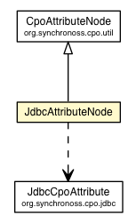

org.synchronoss.cpo.util.jdbc
Class JdbcAttributeNode

java.lang.Object
 javax.swing.tree.DefaultMutableTreeNode
org.synchronoss.cpo.util.AbstractCpoNode
org.synchronoss.cpo.util.CpoAttributeNode
org.synchronoss.cpo.util.jdbc.JdbcAttributeNode
javax.swing.tree.DefaultMutableTreeNode
org.synchronoss.cpo.util.AbstractCpoNode
org.synchronoss.cpo.util.CpoAttributeNode
org.synchronoss.cpo.util.jdbc.JdbcAttributeNode
- All Implemented Interfaces:
- Serializable, Cloneable, MutableTreeNode, TreeNode
public class JdbcAttributeNode
- extends CpoAttributeNode
- See Also:
- Serialized Form
|
Constructor Summary |
JdbcAttributeNode(org.synchronoss.cpo.jdbc.JdbcCpoAttribute attribute)
|
| Methods inherited from class org.synchronoss.cpo.util.CpoAttributeNode |
getDataName, getDataType, getJavaName, getPanelForSelected, getParent, getTransformClassName, isProtected, performRemove, setAttribute, setDataName, setDataType, setTransformClass |
| Methods inherited from class org.synchronoss.cpo.util.AbstractCpoNode |
getProxy, getRoot, getToolTipText, isChildDirty, isChildNew, isChildRemove, isDirty, isNew, isRemove, setChildDirty, setChildNew, setChildRemove, setDirty, setNew, setProtected, setRemove |
| Methods inherited from class javax.swing.tree.DefaultMutableTreeNode |
add, breadthFirstEnumeration, children, clone, depthFirstEnumeration, getAllowsChildren, getChildAfter, getChildAt, getChildBefore, getChildCount, getDepth, getFirstChild, getFirstLeaf, getIndex, getLastChild, getLastLeaf, getLeafCount, getLevel, getNextLeaf, getNextNode, getNextSibling, getPath, getPathToRoot, getPreviousLeaf, getPreviousNode, getPreviousSibling, getSharedAncestor, getSiblingCount, getUserObjectPath, insert, isLeaf, isNodeAncestor, isNodeChild, isNodeDescendant, isNodeRelated, isNodeSibling, isRoot, pathFromAncestorEnumeration, postorderEnumeration, preorderEnumeration, remove, remove, removeAllChildren, removeFromParent, setAllowsChildren, setParent, setUserObject, toString |
JdbcAttributeNode
public JdbcAttributeNode(org.synchronoss.cpo.jdbc.JdbcCpoAttribute attribute)
getUserObject
public org.synchronoss.cpo.jdbc.JdbcCpoAttribute getUserObject()
- Overrides:
getUserObject in class CpoAttributeNode
getDbTable
public String getDbTable()
getDbColumn
public String getDbColumn()
setDbTable
public void setDbTable(String dbTable)
setDbColumn
public void setDbColumn(String dbColumn)
Copyright © 2014. All Rights Reserved.